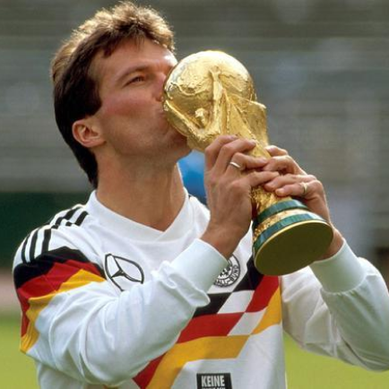

Seleção Alemã
A Seleção Alemã de Futebol, é organizada pela Federação Alemã de Futebol (em alemão: Deutscher Fußball-Bund), instituição que administra o futebol na Alemanha, e representa o país nas competições de futebol da UEFA e FIFA. É uma das seleções masculinas de futebol mais bem sucedidas do mundo, participando de oito finais de Copas do Mundo, ganhando quatro delas. É o país que mais vezes chegou entre os semifinalistas, com 13 aparições, além de ser o detentor do maior número de medalhas no torneio, com 12 (quatro ouros, quatro pratas e quatro bronzes). Após o Brasil, é a seleção que conquistou o maior número de vitórias (66), além de deter o recorde de gols marcados (224) e o maior número de jogos disputados (106), em 18 participações no torneio
Títulos
Copa do Mundo: 4
Eurocopa: 3
Ídolos
-

-

-

- 
FRANZ BECKENBAUER
Finalizando em segundo e terceiro nas Copas do Mundo em 1966 e 1970, Beckenbauer finalmente colocou suas mãos no troféu na terceira tentativa em 1974. “The Kaiser” então venceu a Copa do Mundo pela segunda vez em Italia ’90. Zagueiro típico por ofício durante essa era, Beckenbauer foi taticamente ciente embora ele tinha um olho para o passe. Como a maioria dos alemães, ele jogou a maior parte de sua carreira em um clube, Bayern Munich, vencendo Bundelisga em 4 ocasiões, assim com European Cup em 3. Ele é considerado um dos melhores jogadores de todos os tempos.
GERD MULLER
Excepcional goleador da Alemanha, não há muito que Muller não tenha alcançado. Com 68 gols em 62 jogos em nível internacional, os atacantes do dia moderno na Alemanha sempre serão comparados com o “The Bomber”. Seus 566 gols pelo Bayern Munich fazem dele seu jogador de maior pontuação, e também exibe a melhor relação de gols para um jogo na Liga dos Campeões da UEFA. Ele se orgulha de estar entre os jogadores que mais marcou gols no mundo. Suas explorações de pontuar o viram levantar as mesmas honras em nível internacional como Sepp Maier, enquanto seus gols para Bayern Munich o viram assentar 4 títulos Bundesliga e 3 Liga dos Campeões.
SEPP MAIER
A Alemanha notoriamente produziu goleiros de classe mundial com significativos feitos. Recentemente as pessoas viram Oliver Kahn, Jens Lehmann e Manuel Neuer próximo ao número 1, mas em nível internacional, nenhum marcou a história como Sepp Maier. Vencendo o Melhor Jogador do Ano Alemão por 3 vezes, Maier jogou sua carreira de clube inteira em Bayern Munich, fazendo pouco menos de 600 aparições em todas as competições durante uma carreira que abrangeu 18 anos. Pela seleção foi convocado em 95 jogos (13 anos). De fato, ele é digno de estar entre os melhores goleiros que o mundo já viu.
MATTHAUS
Com 150 convocações para Alemanha, Lothar é o atual recordista de convocações que o viu vencer a Euro 1980 e Copa do Mundo de 1990, também veio a ser vice-campeão da Copa do Mundo de 82 e 86. Um meio-campista dinâmico por ofício. É considerado um dos maiores jogadores que as Copas do Mundo já viu.